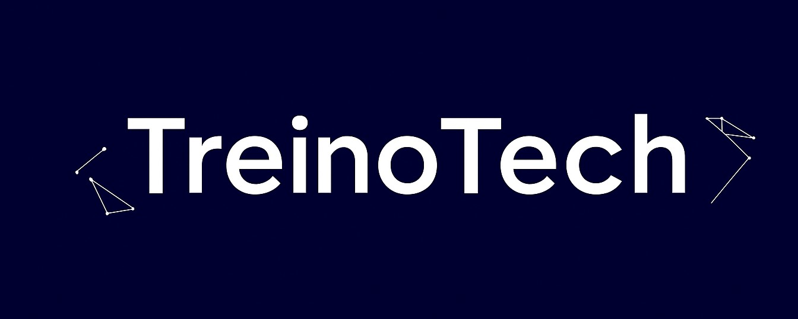

Sobre mim
Projetos
Contato
Sobre mim
Projetos
Contato
Meu nome é Rafael e eu sou desenvolvedor web. Sou formado em Educação Física, mas sempre me encantei pela tecnologia e sempre tive curiosidade em saber como um computador funcionava.
A procura de novos desafios, iniciei os estudos em programação com um tecnólogo de análise e desenvolvimento de sistemas. Estudei durante 3 semestres, porém tranquei o curso e comecei a estudar desenvolvimento web. Transitando para uma área mais específica, conclui um curso de 1500 horas de desenvolvimento web full stack pela Trybe.
Tendo como objetivo principal ir para a área de tecnologia, retomei em 2025 a graduação de tecnólogo em Análise e Desenvolvimento de Sistemas, em busca da minha primeira oportunidade de trabalho.



Desenvolvi o TreinoTech como forma de conciliar minha primeira área de formação (Educação Física) com minha área de estudo atual (Desenvolvimento de Software), além de me ajudar no controle dos meus próprios treinos!
Next.js 15 + React + Tailwind CSS
Node.js + Express + MongoDB Atlas
Deploy: Vercel + Render
Uma aplicação full-stack funcional que une minha paixão pela área da musculação com o desenvolvimento de software, criando uma ferramenta prática para o dia a dia!
📝 Observação: O servidor pode estar em modo sleep nas primeiras tentativas de acesso (serviço gratuito). O sistema faz tentativas automáticas para "acordar" o servidor.